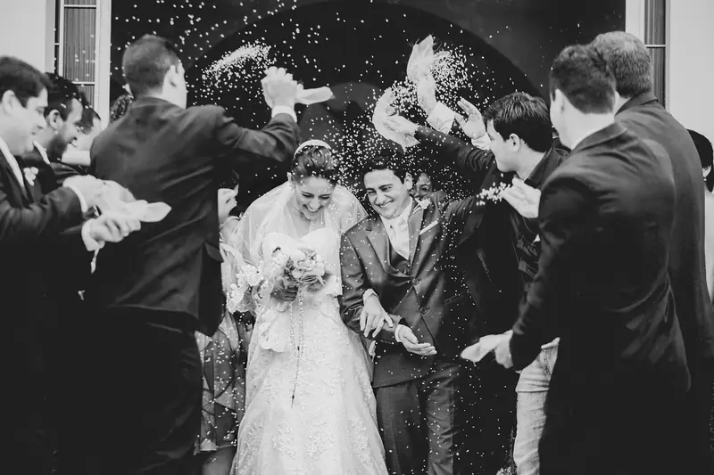
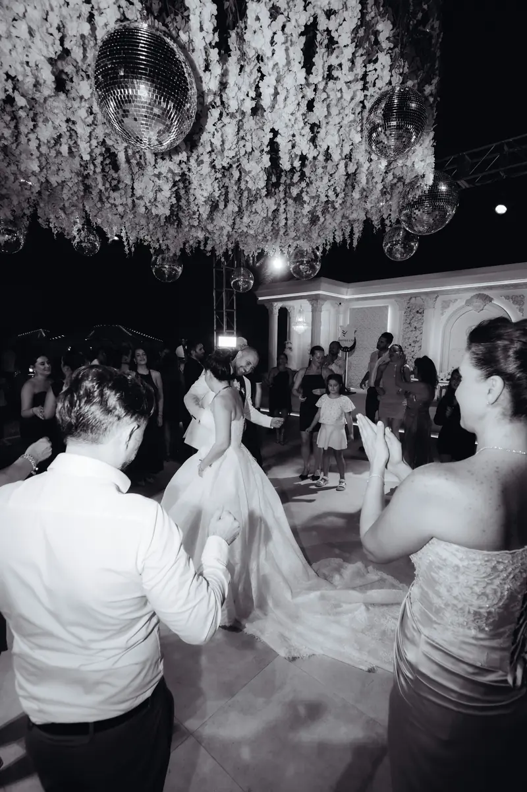
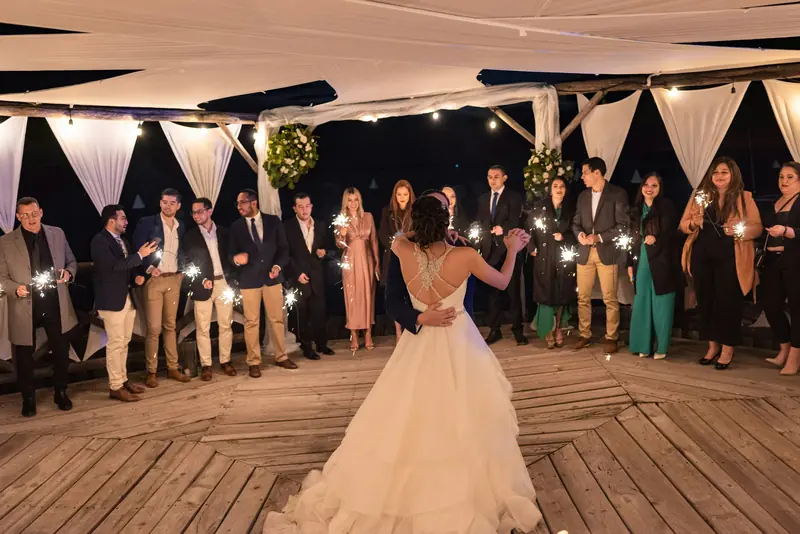

Wedding photography,
with room to be you.
A considered eye. A day that feels like yours.
From the Lake District to wherever you go.

1 / 3

that feel like you.
Good photographs should
take you back to how it felt.
The people you love. The place you chose. The unplanned moments in between. A little guidance when you need it, and room to enjoy the rest.
Meet the approachA little more of the day.
View the full portfolio





A photographic mood, drawn from credited stock images for this fictional brand. Image credits

The people make it yours.
More time in the moment.
You deserve to enjoy your wedding. We plan the important photographs and leave space for the day to unfold.
Before the day
A conversation about your plans, your people and what you hope to remember.
On the day
Calm direction for portraits. An unobtrusive presence for everything else.
For the years ahead
A complete gallery to revisit, print and share.
A few things worth knowing.
From the journal


Tell me about your plans.
A place, a date, a little about the two of you.